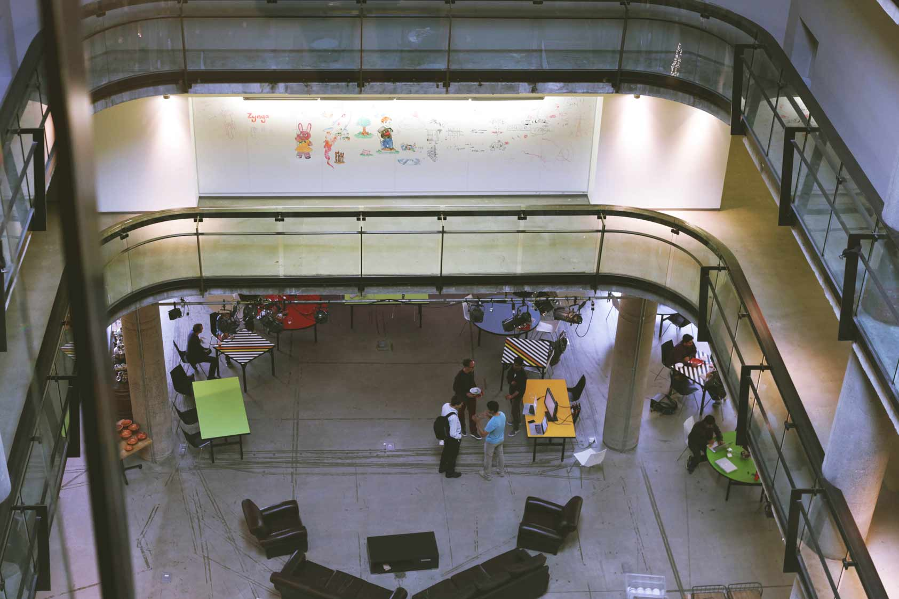
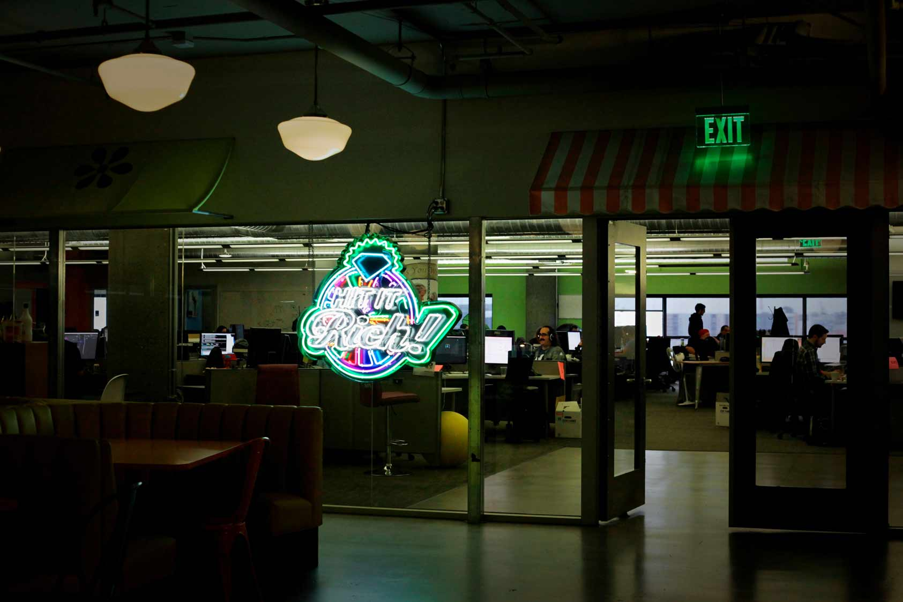
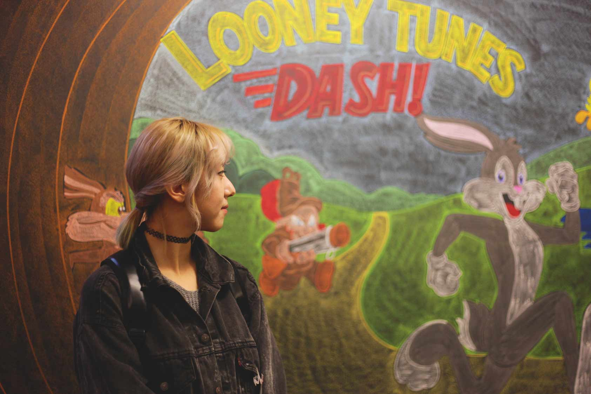
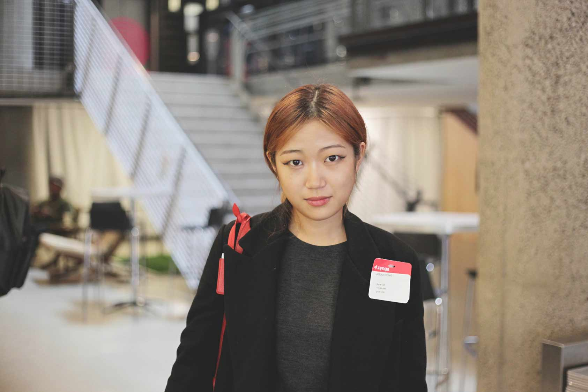
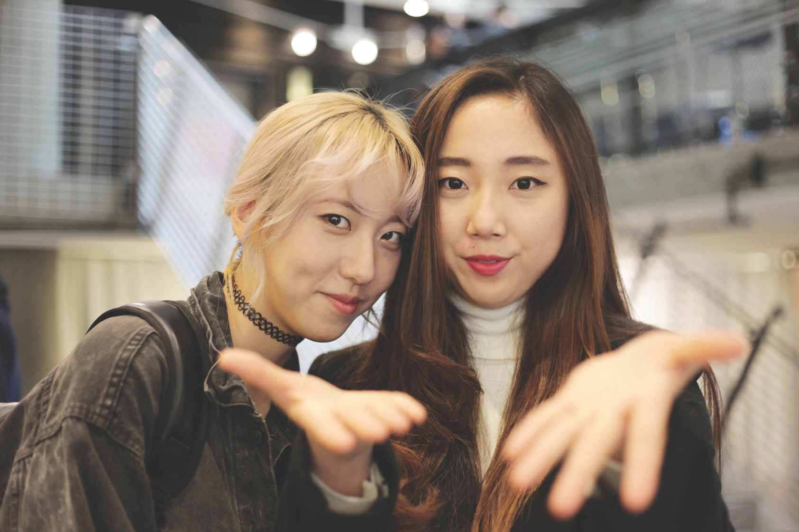

건물 입구부터 형형색색의 조명과 게임 캐릭터들로 온통 화려한 회사, 징가(Zynga). 국내 사람들에겐 조금 익숙치 않은 회사이지만, 징가는 페이스북을 기반으로 팜빌(FarmVille), 시티빌(CityVille), 마피아워(Mafia War) 등의 소셜 게임을 처음 전세계에 대중화한 글로벌 게임 기업이다. 공간 431 팀은 이 곳에서 PM(Product Manager)로 활동하고 있는 임원준(연세대 산업공학 졸) 선배님을 만나, 징가와 PM 직무에 관한 다양한 이야기를 들어보았다.
안녕하세요! 저희는 서강대 Art&Technology학과 재학생들로 이루어진 공간 431 팀입니다. 회사 로고부터 개 모양인 것이 정말 독특한데요. 징가는 어떤 곳인지 설명 부탁드립니다.
반가워요. 징가의 경우는 한국에 많이 알려진 회사는 아닌 것 같아요. 징가는 초기에 페이스북을 기반으로 게임과 SNS를 접목시킨 소셜 네트워크 게임을 탄생시켰어요. 이 게임들은 큰 인기를 끌었고, 회사가 빠른 속도로 성장을 했죠. 한국의 예를 들어 보자면 카카오톡이라는 소셜네트워킹서비스를 기반으로 한 때 ‘애니팡’이 선풍적인 인기를 끌었던 것과도 비슷하죠. 2011년, 2012년 즈음 징가는 전성기를 보냈지만, 그 후 게임이 웹이 아닌 모바일 쪽으로 옮겨가면서 점차 힘든 시기를 보내고 있어요. 레이오프도 빈번하게 일어나구요
실리콘밸리의 선두 IT기업일지라도, 시대의 변화에 큰 영향을 받는군요. 한편, 회사 분위기가 정말 독특한 것 같아요. 개를 데리고 온 직원들도 많이 보이네요.
네. 이 곳의 회사들이 역량있는 개발자들을 끌어모으기 위해서 경쟁을 많이 하고 있어요. 개를 데려와서 함께 일을 할 수 있다는 것 역시 징가에서 내세우는 하나의 차별점 인거죠. 음식도 보면, 각 회사들이 더 유명한 셰프를 구내 식당에 두려고 하고 있구요. 아래 층에는 직원들을 위한 헬스장이 있어요. 처음 제가 이곳에 입사 했을 때는 회사 내에서 무료 마사지 서비스를 받을 수도 있었어요. 지금은 회사 사정이 어려워지면서 점차 이런 혜택들이 줄어들고 있지만요.
그렇군요. 선배님은 징가에서 어떤 일을 하는지 궁금합니다.
저는 PM(Product Management)으로 일하고 있어요. 게임을 만들 때, A/B 테스트를 진행하게 되요. 게임에 새로운 기능을 추가하게 될 때, 이걸 모든 유저한테 배포하는 게 아니거든요. 리스크가 크기 때문이죠. 새로운 기능이 우리 게임을 망가뜨릴 수도 있고, 또 유저들이 예상 밖으로 그 기능을 마음에 들어하지 않을 경우도 많죠. 그렇기 때문에 유저 그룹을 나눠서 테스팅을 하게 되요. 예를 들면, 80퍼센트의 유저에게는 기존 익스피리언스(experience)를 그대로 보여주죠. 하지만 다른 10퍼센트에게는 A라는 기능을, 다른 10퍼센트에게는 B라는 기능을 보여주고 난 후. 유저 행동을 파악해요. 어떤 그룹에서 유저들이 돈을 얼마나 쓰는지, 얼마나 게임을 많이 하는지, 또 얼마나 더 오래하는 지 등을 보고 분석하게 됩니다. 저는 엔지니어와 UX디자이너에게 특정 목표를 제안한 후, 이들과 함께 이런 테스팅을 설계하고, 목표를 알맞게 맞추어 나가는 일을 하고 있어요.
우와, 정말 재미있어 보이는데요! 혹시 한국에서도 유사한 일을 하셨나요?
아니에요. 한국에서는 연세대 산업공학과를 졸업한 후, 첫 직장으로 마이크로소프트에서 마케팅 일을 했었어요. 학부 전공과 큰 관련이 있진 않았지만, 그저 재밌어 보여서 했던 일이에요. 한국 회사도 물론 좋았고, 배우는 점도 많았고 좋은 사람들도 만날 수 있었어요. 하지만, 모든 글로벌 IT기업이 그렇 듯, 전세계 매출에 한국은 1퍼센트 정도 밖에 영향을 끼치지 못해요. 또, 본사 정책에 따라 한국 지사가 좌지우지 되는 것도 컸고요. 이런 한계들에 더해서 조금 더 다양하고 새로운 경험을 하고 싶다는 생각에 미국에 MBA 학위를 따러 오게 되었어요. 그 후, 사업을 하다가 징가로 오게 되었답니다. 한국에서의 직장과 MBA 모두 제가 징가에서 하는 일과 큰 연관이 있진 않아요.
데이터를 분석하고, 실험을 설계하는 일들은 다 징가에 와서 배우게 된 것들이에요. 회사에 입사할 때 역시, 저에게 그런 것들을 기대하진 않았어요. Job Interview를 볼 때는 얼마만큼의 논리력을 갖추고 있느냐를 중심으로 채용했던 것 같구요.
대단하십니다! 한편 궁금한 점이 있어요. PM으로서 엔지니어, UX디자이너와 함께 일을 하는데 의견에 마찰이 있으면 어떻게 해결하시나요?
우선적으로 데이터를 보겠죠. 징가는 특히 데이터와 수치를 중시하는 회사에요. 초기 성장 역시 철저한 데이터 및 유저 분석을 통해 폭발적으로 이루어질 수 있었던 것이죠. 만약 데이터만 가지고 판단할 수 없는 상황이라면 저는 대체적으로 상황에 따라 엔지니어나 UX디자이너의 의견에 따라가는 편인 것 같아요.
미국 유학에 어려운 점은 없으셨나요? 아무래도 언어문제나 혹은 비용적인 부분에 있어서 만만치 않았을 것 같아요.
음… 제 생각에 처음부터 이것 저것 따지려고 하면 미국 유학을 절대 못 가요. 생각해보세요. 단기적으로 2년 동안 돈을 벌 수가 없고요. 또 여기에 천문학적인 학비와, 생활비를 따지면 몇 억이 깨지게 되어 있어요. 이성적으로 보면 가기 힘들죠. 대신 내가 정말로 미국에서 무언가를 해보고 싶다는 열정이 있거나, 혹은 장기적으로 3,40년 이후를 보고 나 자신을 업그레이드시키고 싶다는 생각이 있다면 미국 유학을 추천해요. 금전적인 부분 때문에 이 경험을 놓치기엔 아깝죠. 특히 MBA의 경우에는 학부의 전공과 상관없이 새로운 기회를 접하게 해줘요. 저 역시도 한국에서 직장 생활을 하다가 미국으로 활동 지역을 변경할 수 있었고, 또 PM이라는 일로 커리어를 바꿀 수 있었거든요. 언어적인 부분은 사실 어렸을 때 외국에서 살았기 때문에 크게 문제되진 않았어요.
커리어를 쌓는 데 있어서 중요한 것이 무엇이라고 생각하시나요?
예전에 인문학이 중요하다고 말하는 사람들이 많았잖아요. 그 땐 사실 이해가 안 되었어요. 하지만, 사회에 나와서 직접 일을 해보니까, 역시 ‘인간에 대한 이해’가 있다면 업무에도 더 좋았을 것 같다는 생각이 들어요. 인지적인 부분이나 아니면 인간의 행동 같은 것들 말이에요. 하지만, 또 생각해보면 한편으로는 이런 것들이 다 직관적인 요소잖아요. 저는 PM으로서 이런 직관들을 실험을 설계하고 이를 통해 산출된 데이터를 통해 확인하려고 해요.
선배님 말씀을 듣자니, 정말 매력있는 일을 하고 계신 것 같아요. 물론 스트레스도 클 것 같지만요.
네. 힘들다기보단 재밌는 게 더 많은 것 같아요. 한편으로는 내가 디자인을 잘 할 줄 알았더라면, 내가 개발을 더 알았더라면 이라는 생각이 들긴 해요. 또, 엔지니어와 디자이너를 내가 원하는 방향으로 끌고 가는 것 역시 어려우니까요. 하지만, 내가 나중에 나의 제품을 만들어 보고 싶다는 생각이 있다면 정말 좋은 경험이라고 생각해요. 저 역시도 그런 가능성을 염두에 두고 있고요.
항상 도전적인 모습이 멋지세요!
(웃음) 여러분들도 계획하신 일들 모두 다 잘 되길 바랍니다.
 